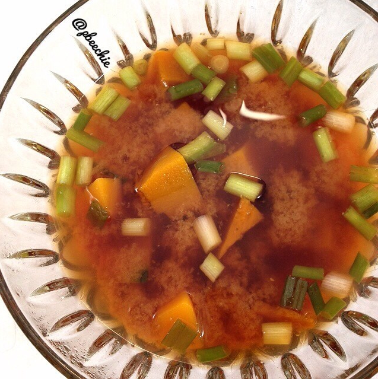

Kabocha Miso Soup
I craved this way too hard for way too long. I am always intimidated to make soup, even though it's always ridiculously easy. So I take forever to try it... It ended up so good and I impressed my boyfriend. He literally stopped and said "Whoa. This isn't from a restaurant?" But it was so easy! I didn't have tofu though so we just had chicken on the side for protein. And you could omit the kabocha to make regular miso soup but why.

Kabocha Miso SoupServes: 3-4- 4 cups water
- 1/2 cup vegetable broth
- 8 oz peeled, raw kabocha squash
- 1/4 cup miso paste
- 1/4 cup war water
- 2 TBSP bragg's liquid aminos
- 1 tsp sea kelp granules
- 4 chopped scallions
In a pot, boil the water and vegetable broth. Once boiling, chop the raw kabocha squash and add it to the pot. Boil for 2-3 minutes. In a small bowl, mix the miso paste with 1/4 cup warm water to evenly thin it out. Then reduce the heat of the pot to simmer and add this diluted miso to the pot. Also add the braggs liquid aminos, sea kelp granules seasoning, and chopped scallions. Stir. Let simmer 3-4 minutes, then serve!